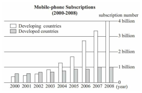

2010 年全国硕士研究生招生考试英语（二）
Section I Use of English
Directions:
Read the following text. Choose the best word(s) for each numbered blank and mark A, B, C or D on the ANSWER SHEET. (10 points)
The outbreak of swine flu that was first detected in Mexico was declared a global epidemic on June 11, 2009. It is the first worldwide epidemic 1 by the World Health Organization in 41 years.
The heightened alert 2 an emergency meeting with flu experts in Geneva that assembled after a sharp rise in cases in Australia, and rising 3 in Britain, Japan, Chile and elsewhere.
But the epidemic is “ 4 ” in severity, according to Margaret Chan, the organization’s director general, 5 the overwhelming majority of patients experiencing only mild symptoms and a full recovery, often in the 6 of any medical treatment.
The outbreak came to global 7 in late April 2009, when Mexican authorities noted an unusually large number of hospitalizations and deaths 8 healthy adults. As much of Mexico City shut down at the height of a panic, cases began to 9 in New York City, the southwestern United States and around the world.
In the United States, new cases seemed to fade 10 warmer weather arrived. But in late September 2009, officials reported there was 11 flu activity in almost every state and that virtually all the 12 tested are the new swine flu, also known as (A) H1N1, not seasonal flu. In the U.S., it has 13 more than one million people, and caused more than 600 deaths and more than 6,000 hospitalizations.
Federal health officials 14 Tamiflu for children from the national stockpile and began 15 orders from the states for the new swine flu vaccine. The new vaccine, which is different from the annual flu vaccine, is 16 ahead of expectations. More than three million doses were to be made available in early October 2009, though most of those 17 doses were of the FluMist nasal spray type, which is not 18 for pregnant women, people over 50 or those with breathing difficulties, heart disease or several other 19 .
But it was still possible to vaccinate people in other high-risk groups: health care workers, people 20 infants and healthy young people.
Section II Reading Comprehension
Part A
Directions:
Read the following four texts. Answer the questions after each text by choosing A, B, C or D. Mark your answers on the ANSWER SHEET. (40 points)
Text 1
The longest bull run in a century of art-market history ended on a dramatic note with a sale of 56 works by Damien Hirst, Beautiful Inside My Head Forever, at Sotheby’s in London on September 15th, 2008. All but two pieces sold, fetching more than £70m, a record for a sale by a single artist. It was a last victory. As the auctioneer called out bids, in New York one of the oldest banks on Wall Street, Lehman Brothers, filed for bankruptcy.
The world art market had already been losing momentum for a while after rising bewilderingly since 2003. At its peak in 2007 it was worth some $65 billion, reckons Clare McAndrew, founder of Arts Economics, a research firm—double the figure five years earlier. Since then it may have come down to $50 billion. But the market generates interest far beyond its size because it brings together great wealth, enormous egos, greed, passion and controversy in a way matched by few other industries.
In the weeks and months that followed Mr. Hirst’s sale, spending of any sort became deeply unfashionable. In the art world that meant collectors stayed away from galleries and salerooms. Sales of contemporary art fell by two-thirds, and in the most overheated sector, they were down by nearly 90% in the year to November 2008. Within weeks the world’s two biggest auction houses, Sotheby’s and Christie’s, had to pay out nearly $200m in guarantees to clients who had placed works for sale with them.
The current downturn in the art market is the worst since the Japanese stopped buying Impressionists at the end of 1989. This time experts reckon that prices are about 40% down on their peak on average, though some have been far more fluctuant. But Edward Dolman, Christie’s chief executive, says: “I’m pretty confident we’re at the bottom.”
What makes this slump different from the last, he says, is that there are still buyers in the market. Almost everyone who was interviewed for this special report said that the biggest problem at the moment is not a lack of demand but a lack of good work to sell. The three Ds — death, debt and divorce — still deliver works of art to the market. But anyone who does not have to sell is keeping away, waiting for confidence to return.
21. In the first paragraph, Damien Hirst’s sale was referred to as “a last victory” because
____
22. By saying “spending of any sort became deeply unfashionable” (Para.3), the author
suggests that ____
23. Which of the following statements is NOT true?
24. The three Ds mentioned in the last paragraph are ____
25. The most appropriate title for this text could be ____.
Text 2
I was addressing a small gathering in a suburban Virginia living room — a women’s group that had invited men to join them. Throughout the evening, one man had been particularly talkative, frequently offering ideas and anecdotes, while his wife sat silently beside him on the couch. Toward the end of the evening, I commented that women frequently complain that their husbands don’t talk to them. This man quickly nodded in agreement. He gestured toward his wife and said, “She’s the talker in our family.” The room burst into laughter; the man looked puzzled and hurt. “It’s true,” he explained. “When I come home from work, I have nothing to say. If she didn’t keep the conversation going, we’d spend the whole evening in silence.”
This episode crystallizes the irony that although American men tend to talk more than women in public situations, they often talk less at home. And this pattern is wreaking havoc with marriage.
The pattern was observed by political scientist Andrew Hacker in the late 1970s. Sociologist Catherine Kohler Riessman reports in her new book Divorce Talk that most of the women she interviewed — but only a few of the men — gave lack of communication as the reason for their divorces. Given the current divorce rate of nearly 50 percent, that amounts to millions of cases in the United States every year — a virtual epidemic of failed conversation.
In my own research, complaints from women about their husbands most often focused not on tangible inequities such as having given up the chance for a career to accompany a husband to his, or doing far more than their share of daily life-support work like cleaning, cooking and social arrangements. Instead, they focused on communication: “He doesn’t listen to me.” “He doesn’t talk to me.” I found, as Hacker observed years before, that most wives want their husbands to be, first and foremost, conversational partners, but few husbands share this expectation of their wives.
In short, the image that best represents the current crisis is the stereotypical cartoon scene of a man sitting at the breakfast table with a newspaper held up in front of his face, while a woman glares at the back of it, wanting to talk.
26. What is most wives’ main expectation of their husbands?
27. Judging from the context, the phrase “wreaking havoc” (Para.2) most probably means
____
28. All of the following are true EXCEPT ____
29. Which of the following can best summarize the main idea of this text?
30. In the following part immediately after this text, the author will most probably focus
on ____.
Text 3
Over the past decade, many companies had perfected the art of creating automatic behaviors — habits — among consumers. These habits have helped companies earn billions of dollars when customers eat snacks or wipe counters almost without thinking, often in response to a carefully designed set of daily cues.
“There are fundamental public health problems, like dirty hands instead of a soap habit, that remain killers only because we can’t figure out how to change people’s habits,” said Dr. Curtis, the director of the Hygiene Center at the London School of Hygiene & Tropical Medicine. “We wanted to learn from private industry how to create new behaviors that happen automatically.”
The companies that Dr. Curtis turned to — Procter & Gamble, Colgate-Palmolive and Unilever — had invested hundreds of millions of dollars finding the subtle cues in consumers’ lives that corporations could use to introduce new routines.
If you look hard enough, you’ll find that many of the products we use every day — chewing gums, skin moisturizers, disinfecting wipes, air fresheners, water purifiers, health snacks, teeth whiteners, fabric softeners, vitamins — are results of manufactured habits. A century ago, few people regularly brushed their teeth multiple times a day. Today, because of shrewd advertising and public health campaigns, many Americans habitually give their pearly whites a cavity-preventing scrub twice a day, often with Colgate, Crest or one of the other brands.
A few decades ago, many people didn’t drink water outside of a meal. Then beverage companies started bottling the production of far-off springs, and now office workers unthinkingly sip bottled water all day long. Chewing gum, once bought primarily by adolescent boys, is now featured in commercials as a breath freshener and teeth cleanser for use after a meal. Skin moisturizers are advertised as part of morning beauty rituals, slipped in between hair brushing and putting on makeup.
“Our products succeed when they become part of daily or weekly patterns,” said Carol Berning, a consumer psychologist who recently retired from Procter & Gamble, the company that sold $76 billion of Tide, Crest and other products last year. “Creating positive habits is a huge part of improving our consumers’ lives, and it’s essential to make new products commercially viable.”
Through experiments and observation, social scientists like Dr. Berning have learned that there is power in tying certain behaviors to habitual cues through ruthless advertising. As this new science of habit has emerged, controversies have erupted when the tactics have been used to sell questionable beauty creams or unhealthy foods.
31. According to Dr. Curtis, habits like hand washing with soap ____
32. Bottled water, chewing gum and skin moisturizers are mentioned in Paragraph 5 so as
to ____
33. Which of the following does NOT belong to products that help create people’s habits?
34. From the text we know that some of consumers’ habits are developed due to ____
35. The author’s attitude toward the influence of advertisement on people’s habits is ____.
Text 4
Many Americans regard the jury system as a concrete expression of crucial democratic values, including the principles that all citizens who meet minimal qualifications of age and literacy are equally competent to serve on juries; that jurors should be selected randomly from a representative cross section of the community; that no citizen should be denied the right to serve on a jury on account of race, religion, sex, or national origin; that defendants are entitled to trial by their peers; and that verdicts should represent the conscience of the community and not just the letter of the law. The jury is also said to be the best surviving example of direct rather than representative democracy. In a direct democracy, citizens take turns governing themselves, rather than electing representatives to govern for them.
But as recently as in 1968, jury selection procedures conflicted with these democratic ideals. In some states, for example, jury duty was limited to persons of supposedly superior intelligence, education, and moral character. Although the Supreme Court of the United States had prohibited intentional racial discrimination in jury selection as early as the 1880 case of Strauder v. West Virginia, the practice of selecting so-called elite or blue-ribbon juries provided a convenient way around this and other antidiscrimination laws.
The system also failed to regularly include women on juries until the mid-20th century. Although women first served on state juries in Utah in 1898, it was not until the 1940s that a majority of states made women eligible for jury duty. Even then several states automatically exempted women from jury duty unless they personally asked to have their names included on the jury list. This practice was justified by the claim that women were needed at home, and it kept juries unrepresentative of women through the 1960s.
In 1968, the Congress of the United States passed the Jury Selection and Service Act, ushering in a new era of democratic reforms for the jury. This law abolished special educational requirements for federal jurors and required them to be selected at random from a cross section of the entire community. In the landmark 1975 decision Taylor v. Louisiana, the Supreme Court extended the requirement that juries be representative of all parts of the community to the state level. The Taylor decision also declared sex discrimination in jury selection to be unconstitutional and ordered states to use the same procedures for selecting male and female jurors.
36. From the principles of the US jury system, we learn that ____
37. The practice of selecting so-called elite jurors prior to 1968 showed ____
38. Even in the 1960s, women were seldom on the jury list in some states because ____
39. After the Jury Selection and Service Act was passed, ____
40. In discussing the US jury system, the text centers on ____
Part B
Directions:
Read the following text and decide whether each of the statements is true or false. Choose T if the statement is true or F if the statement is not true. Mark your answers on ANSWER SHEET 1. (10 points) Copying Birds May Save Aircraft Fuel
Both Boeing and Airbus have trumpeted the efficiency of their newest aircraft, the 787 and A350 respectively. Their clever designs and lightweight composites certainly make a difference. But a group of researchers at Stanford University, led by Ilan Kroo, has suggested that airlines could take a more naturalistic approach to cutting jet-fuel use and it would not require them to buy new aircraft.
The answer, says Dr. Kroo, lies with birds. Since 1914, scientists have known that birds flying in formation — a V-shape — expend less energy. The air flowing over a bird’s wings curls upwards behind the wingtips, a phenomenon known as upwash. Other birds flying in the upwash experience reduced drag, and spend less energy propelling themselves. Peter Lissaman, an aeronautics expert who was formerly at Caltech and the University of Southern California, has suggested that a formation of 25 birds might enjoy a range increase of 71%.
When applied to aircraft, the principles are not substantially different. Dr. Kroo and his team modeled what would happen if three passenger jets departing from Los Angeles, San Francisco and Las Vegas were to assemble over Utah, assume an inverted V-formation, occasionally change places so all could have a turn in the most favourable positions, and proceed to London. They found that the aircraft consumed as much as 15% less fuel (coupled with a reduction in carbon-dioxide output). Nitrogen-oxide emissions during the cruising portions of the flight fell by around a quarter.
There are, of course, knots to be worked out. One consideration is safety, or at least the perception of it. Would passengers feel comfortable travelling in companion? Dr. Kroo points out that the aircraft could be separated by several nautical miles, and would not be in the intimate groupings favoured by display teams like the Red Arrows. A passenger peering out of the window might not even see the other planes. Whether the separation distances involved would satisfy air-traffic-control regulations is another matter, although a working group at the International Civil Aviation Organisation has included the possibility of formation flying in a blueprint for new operational guidelines.
It remains to be seen how weather conditions affect the air flows that make formation flight more efficient. In zones of increased turbulence, the planes’ wakes will decay more quickly and the effect will diminish. Dr. Kroo says this is one of the areas his team will investigate further. It might also be hard for airlines to co-ordinate the departure times and destinations of passenger aircraft in a way that would allow them to gain from formation flight. Cargo aircraft, in contrast, might be easier to reschedule, as might routine military flights.
As it happens, America’s armed forces are on the case already. Earlier this year the country’s Defence Advanced Research Projects Agency announced plans to pay Boeing to investigate formation flight, though the programme has yet to begin. There are reports that some military aircraft flew in formation when they were low on fuel during the Second World War, but Dr. Lissaman says they are unsubstantiated. “My father was an RAF pilot and my cousin the skipper of a Lancaster lost over Berlin,” he adds. So he should know.
41. Findings of the Stanford University researchers will promote the sales of new Boeing
and Airbus aircraft.
42. The upwash experience may save propelling energy as well as reducing resistance.
43. Formation flight is more comfortable because passengers cannot see the other planes.
44. The role that weather plays in formation flight has not yet been clearly defined.
45. It has been documented that during World War II, America’s armed forces once tried
formation flight to save fuel.
Section III Translation
46. Directions:
Translate the following text from English into Chinese. Write your translation on the ANSWER SHEET. (15 points)
“Sustainability” has become a popular word these days, but to Ted Ning, the concept will always have personal meaning. Having endured a painful period of unsustainability in his own life made it clear to him that sustainability-oriented values must be expressed through everyday action and choice.
Ning recalls spending a confusing year in the late 1990s selling insurance. He’d been through the dot-com boom and burst and, desperate for a job, signed on with a Boulder agency.
It didn’t go well. “It was a really bad move because that’s not my passion,” says Ning, whose dilemma about the job translated, predictably, into a lack of sales. “I was miserable. I had so much anxiety that I would wake up in the middle of the night and stare at the ceiling. I had no money and needed the job. Everyone said, ‘Just wait, you’ll turn the corner, give it some time.’ ”
Section IV Writing
Part A
47. Directions:
You have just come back from the U.S. as a member of a Sino-American cultural exchange program. Write a letter to your American colleague to
1) express your thanks for his/her warm reception;
2) welcome him/her to visit China in due course.
You should write about 100 words on the ANSWER SHEET.
Do not sign your own name at the end of the letter. Use “Zhang Wei” instead.
Do not write your address. (10 points)
Part B
48. Directions:
In this section, you are asked to write an essay based on the following chart. In your writing, you should
1) interpret the chart, and
2) give your comments.
You should write at least 150 words. Write your essay on the ANSWER SHEET. (15 points)
